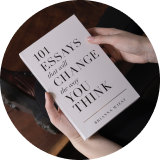
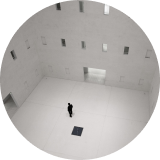

Главные проблемы в обучении
Ни в школе, ни в институте нас не учат тому, как правильно изучать материал. Мы готовимся к экзаменам и учим билеты. Мы тренируемся решать однообразные задачи, чтобы лучше сдать тест, но часто в итоге это не дает нам реального знания. Зубрежка быстро выветривается и не приносит пользы.
Вывод: учиться тоже нужно уметь, но почему-то этому мало где учат. Что с этим делать?
Конкретные техники и упражнения помогают изменить подход к обучению, сделать его эффективным и захватывающим. Эти же техники применяются на примере обучения в Практикуме.
Техники обучения
Пять практик от Барбары Оакли
-

Два вида внимания
Глубокие знания возникают, если чередовать сфокусированное и рассеянное мышление.
-
Recall
Вспоминайте изученное — это позволит соединить разрозненные порции памяти.
-
Интерливинг
Изучайте несколько навыков одновременно, они обогощают друг друга.
-

Вопросы
Слушая преподавателя, придумайте хороший вопрос, который вас действительно волнует.
-
Иллюзия компетентности
Повторите про себя, запишите, расскажите другу: вам только кажется, что вы владеете новой темой.